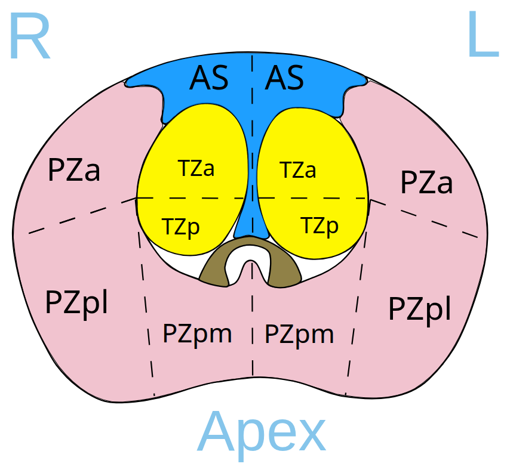
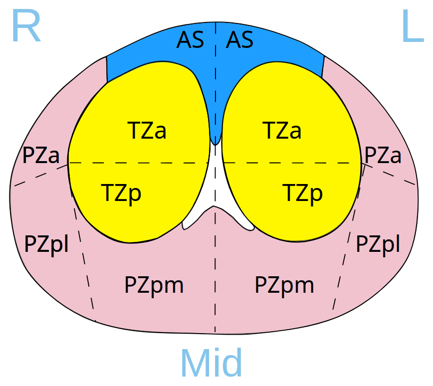
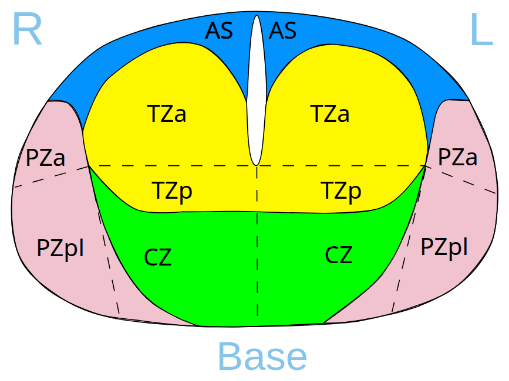
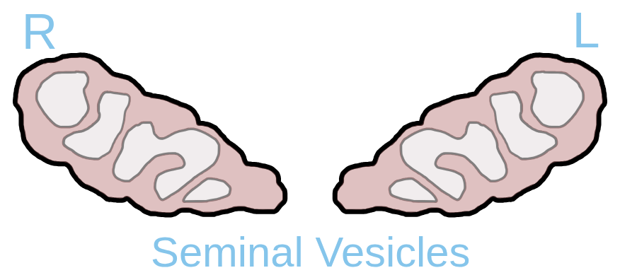
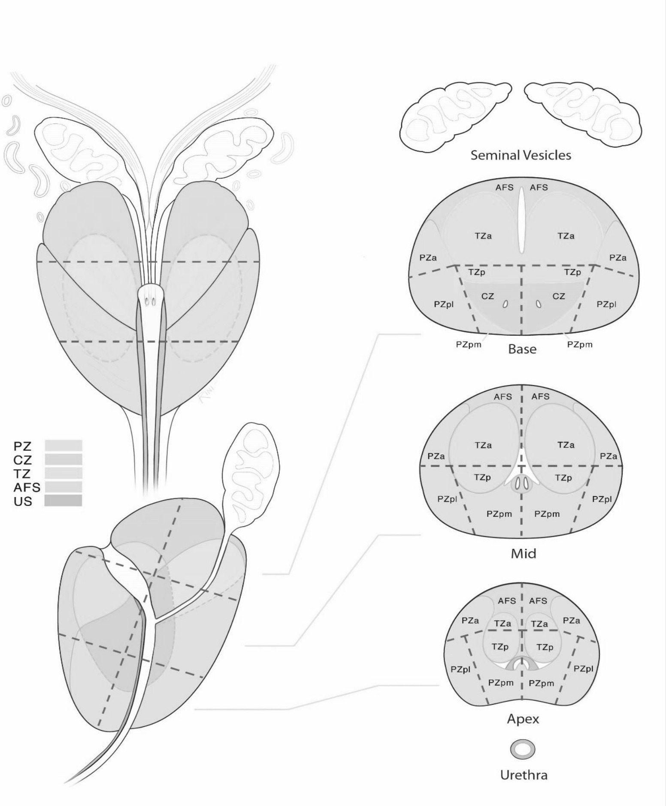
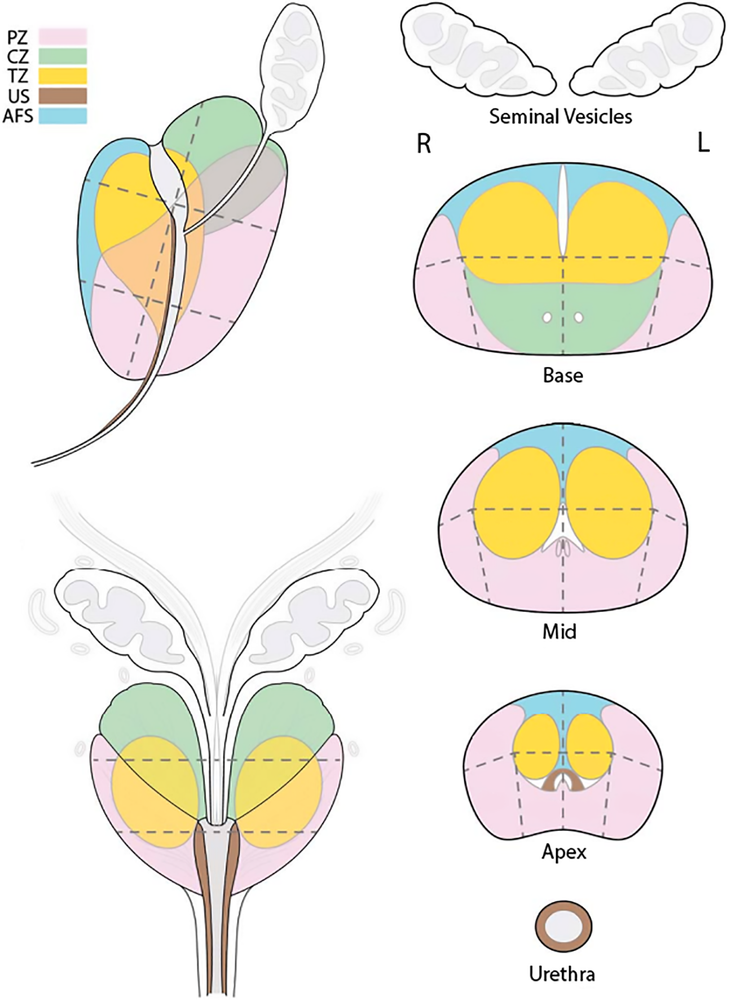
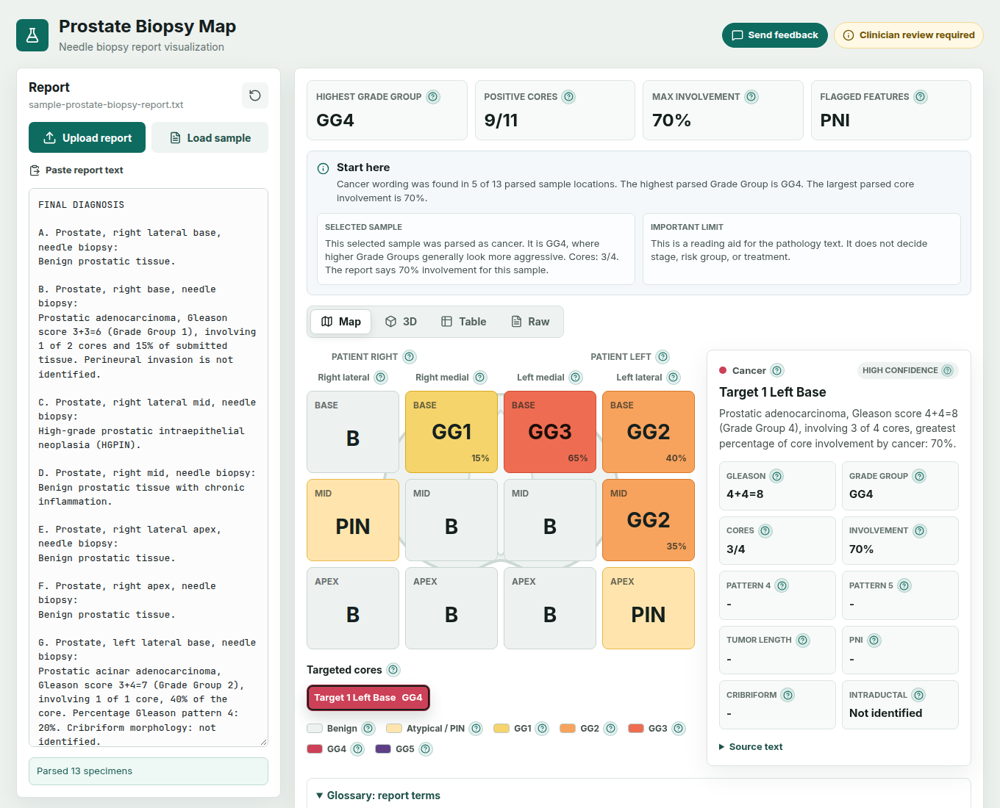
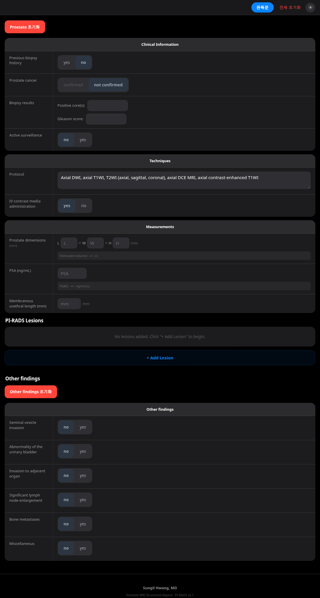

Prostate zone maps: findings
The zone map was 2D
In Tesseract-MI/prostatecancer.ai, master 3e5d699 (2019-10-07), the zone map is four static, hand-drawn Inkscape SVG slice diagrams, one per level. There is no 3D. A level dropdown swaps which SVG is embedded. Clicking a sector fills two text boxes with the side and the sector. The notes do not describe sector highlighting.
The level control is packages/tesseract-cancer-study/client/components/prostate/rowOption/rowOption.html:
- Lines 9–14: a
<select class="location">with options Apex, Mid, Base, and Seminal Vesicles. - Lines 15–16: two “-” addon boxes, the selected side and the selected sector.
- Lines 22–29: inline
notify(e)splits the clicked element id on_into side and sector, and writes those boxes. - Line 31: the default embed is
<embed src="/images/apex.svg" type="image/svg+xml">.
rowOption.js line 4 maps the labels to files: {Base:'base', Mid:'mid', Apex:'apex', 'Seminal Vesicles':'seminal_vesicles'}. Lines 16–22, on a dropdown change, replace the embed with /images/<level>.svg and reset side and sector to “-”.
The drawings are public/images/apex.svg, mid.svg, base.svg, and seminal_vesicles.svg. Each header contains <!-- Created with Inkscape -->. Clickable paths use ids such as R_PZpl, L_TZa, and R_AS. R_CZ is on the base slice only. An example handler is onclick="top.notify(evt)" at apex.svg lines 367–370. Text labels on the apex drawing (lines 72–360) include R/L, AS, TZa, TZp, PZa, PZpl, PZpm, and “Apex”. public/images/locations.png is the PI-RADS v2 sector-map figure the SVGs were traced from.
Nothing in the repository, package.json, or .meteor/packages uses three.js, WebGL, or vtk.js. Grep hits for “three” are only threeColumns and the DICOM value multiplicity VM_THREE. The OHIF showcase image prostatecancer-ai-04 and the screenshots named findings-panel-1/2.png show the apex.svg drawing. A Google AI Mode share link (share.google/aimode/eVzzEKgbC44j5KTSx) could not be read; it returned a Google interstitial only.

The same team later ported the selector to React: Tesseract-MI/prostate-map (2019-08). src/prostate-map/Apex.js, Mid.js, and Base.js are the same SVGs as JSX (<svg viewBox="0 0 131.566 122.129">, <tspan zone=… direction=… onClick={onZoneChange}>), with LocationSelector.js and NumberSelector.js. That port is also 2D.
The four slices
The figures are PNG renders of the original SVGs, saved in this repository under assets/tesseract-svgs/. They were fetched from the master branch. Their git blobs match commit 3e5d699f3972d1ceb5fa7b5010705643eae547ea, which is that master commit (the notes cite it as 3e5d699). They are PI-RADS v2 drawings: there are no base PZpm sectors.



3e5d699.








Source, people, license
- Main app: Tesseract-MI/prostatecancer.ai. MIT, “Copyright (c) 2018 ProstateWebViewer”. 135 commits. Last master commit 2019-10-07. Later activity is only dependabot branches. The MIT text is copied in assets/tesseract-svgs/README.md.
- Platform: Tesseract-MI/Tesseract-MI. MIT. A generic version, without the study or the model.
- React zone selector: Tesseract-MI/prostate-map. No LICENSE file.
package.jsonsays"license": "(ISC OR GPL-3.0)", which is ambiguous. Treat it as unlicensed until clarified, or re-derive the artwork from the MIT SVGs in the main repository, which are the same drawings. - Tesseract-MI/Viewers is a fork of OHIF Viewers from the React v1 / v2 era. It has 6 commits of its own (2019-08-19 and 2019-08-20: a logo and an “ai probe tool”). The notes call it an abandoned start of a port.
- Paper: Sedghi, Hamidi, Mehrtash, Ziegler, Tempany, Pieper, Kapur, Mousavi, “Tesseract-medical imaging: open-source browser-based platform for AI deployment in medical imaging”, Proc. SPIE 10951 (2019), doi:10.1117/12.2513004. Queen’s University Med-i Lab. Showcase: ohif.org/showcase/ProstateCancer.
- Data:
private/findings.csvis a ProstateX (TCIA) lesion list (ProxID, fid, pos, zone, ClinSig). The demo study in the screenshots is ProstateX-0004. ProstateX license terms were not verified.
The SVGs were traced from the ACR PI-RADS v2 sector-map figure. ACR licenses PI-RADS under CC BY-NC-ND 4.0, as quoted at radiopaedia.org/cases/prostate-sector-map-pi-rads-v21, so reuse of the derived artwork may carry that restriction. The upstream MIT grant is a separate fact. See the SVG folder note.
Architecture
The application is OHIF v1 on Meteor 1.6. .meteor/release is METEOR@1.6. .meteor/packages lists ohif:* Meteor packages plus tesseract:report, ai, fiducial, server-probe, sync-scroll, sync-tools, and cancer-study, with Blaze templates.
The study list and metadata go through Meteor server methods: packages/ohif-studies/imports/server/methods/studylistSearch.js line 10 and getStudyMetadata.js line 9. Those methods proxy DICOMweb from Orthanc (config/orthancDICOMWeb.json). docker-compose.yml runs MongoDB, Meteor, and orthanc-plugins 1.3.2.
server/main.js uses MongoDB collections. Fiducials are seeded from findings.csv, and there is a UserData collection. Login uses clinical:active-entry at /entrySignIn.
The AI service is Flask with Keras 2.0.3 and TensorFlow 1.12: models/pcad.py, route /predict at line 59. DenseNet weights sit in models/Densenet_T2_ABK_* (12 MB and 1.9 MB files are present in the repository). The client calls a hard-coded http://206.189.232.24:5000/predict (packages/ohif-core/client/components/bootstrap/dialog/ai.js line 16). pcad.py line 30 pulls DICOM from a hard-coded Orthanc at http://162.243.174.237:8042/.
Why it cannot be served as a static site
The running app needs the Meteor server (study list, metadata, login, collections), Orthanc for DICOM, MongoDB, and the Flask process. A bundle of HTML and JavaScript does not replace those.
The Wayback Machine CDX for prostatecancer.ai/* (web.archive.org CDX) listed 94 URLs, saved by the notes as cdx.json. Saved copies:
- wayback/landing-20181107.html — the Meteor shell.
- wayback/bundle-af364ae.js — a 2.8 MB Meteor client bundle. It contains
images/apex.svg, the:5000/predictURL,StudyListSearch,GetStudyMetadata,loginWithPassword, and DDP.
The zone SVGs themselves were not archived (only logo.png, fonts, and CSS). Captures from 2025 are error pages. The archived bundle cannot run statically: it needs a Meteor DDP/sockjs server for login, the study list, metadata, and collections. The notes call it pointless to serve. The GitHub source is the complete copy.
Other open-source prostate schematics
Searched on 2026-11-12 (Europe/Stockholm) via GitHub repository search (the gh client, signed in as erik-sundvalls-bots, read-only; GitHub’s legacy code search returned only junk for sector names), the npm registry, GitLab.com, gitlab.inria.fr, the Slicer ExtensionsIndex, and the web and papers. Every repository in the table was cloned and checked.
Scheme check used in the notes: PI-RADS v2.1 has 41 sectors (38 prostate + 2 seminal vesicle + 1 urethra) and adds base PZpm right and left. v2 has 39 sectors and no base PZpm. The ACR revisions PDF cited is PIRADS-Revisions.pdf. “No license” means no LICENSE file and no GitHub license, so all rights reserved by default.
Most of these projects are unlicensed. The ACR sector-map figure, where a project embeds it, is under CC BY-NC-ND 4.0, so derivatives of that figure are not freely reusable. The ranked table is the survey result. Four illustrations follow it; sources and licenses are also listed in assets/survey-shots/README.md. Those images are not covered by this repository’s Apache License 2.0.
| # | Project | 2D / 3D | Scheme | Interactivity | License | Last commit |
|---|---|---|---|---|---|---|
| 1 | adambisa/rakathon-2026 (ProstaPaper, Rakathon 2026 Brno) | 2D React SVG, paths traced from the PI-RADS figure | v2.1: 38 prostate + sv L/R (+ urethra) | Hover, click to select a sector, lesions filled | none | 2026-10-21 |
| 2 | hwangsi/PIRADSreport | 2D SVG generated in JS (ellipse-clipped grid), base/mid/apex panels. Single HTML file | v2.1, 38 prostate (spec section 4) | Click toggles sectors per lesion and writes a text report | MIT | 2026-07-12 |
| 3 | alterreal/prospect-annotator | 2D: per-level PNG (ACR v2.1 artwork) plus percent-rect hotspots | v2.1: 38 ids, including base PZpm | Tabs for base/mid/apex, click to select | none | 2025-12-19 |
| 4 | SlicerProstate/SlicerPIRADS (3D Slicer) | 2D Qt dialog: PNG plus 39 checkable buttons. Map screenshot embedded in the HTML report | v2, 39 sectors (no base PZpm; SV L/R, urethra) | Multi-select per finding | BSD-3-Clause | 2020-05-12 (not in the Slicer ExtensionsIndex) |
| 5 | che85/PIRADS_Image_Map | 2D HTML image map over the sector PNG, jQuery ImageMapster | 42 areas: 38 including base PZpm, SV L/R, 2 urethra | Hover and click | none | 2017-01-10 |
| 6 | phasic/pirads (Angular 2, mentions an Agfa wiki) | 2D image map over a sectormap PNG | v2, 39 (no base PZpm) | Left-click adds a finding, right-click adds an extra | none | 2016-11-28 |
| 7 | Tubo/prostate-mri | 2D React image-map polygons over a schematic PNG | v2-style: 35 named polygons, no base PZpm | Click | none | 2018-11-05 |
| 8 | juicedtin/PIRADSmap | Unity (C#) UI on 2D level PNGs | v2.1 artwork | Interactive PI-RADS calculator | none | 2021-10-14 |
| 9 | Dederanos/PIRADS_reporting (live) | 2D canvas, freehand pen and eraser on a diagram PNG | v2.1 report (German) | Draw lesions; paste images | none | 2025-08-27 |
| 10 | teedr/prostate-visualization (live) | 2D grid and 3D three.js (sphere plus base/apex planes and markers) | Biopsy 12-core (lateral/medial × base/mid/apex), not PI-RADS | Parses pathology-report text; rotatable 3D | none | 2026-08-21 |
| 11 | schur037/prostate-biopsy-mapper (live) | 2D React SVG | 12-zone systematic biopsy, draggable PI-RADS lesion markers, focal-therapy overlays | Click and drag | none | 2026-03-17 |
| 12 | nicoleaucoin/PI-RADS (Slicer Project Week 2017) | No drawing: Qt combo boxes for gland, zone, AP, and LR | — | Dropdowns | none | 2017-07-21 |
| 13 | fboccara/data-driven-prostate-sectorization (MICCAI 2026, paper) | 3D voxel sector maps computed from zonal masks (Python). No schematic UI | 24-sector subset of v1’s 27 | — | none | 2026-08-26 |
| 14 | ErikSundvall/prostate (this component’s upstream) | 2D D3 web component, SVG | 24 zones | Click, English and Swedish | Apache-2.0 LICENSE file | 2025-11-03 |
A few of the drawings and interfaces

packages/extraction/templates/sector-map.jpg. Rank 1 in the survey: 2D, v2.1, no license (all rights reserved). The project’s own drawing is a React SVG traced from the PI-RADS figure. ACR’s CC BY-NC-ND 4.0 terms may restrict reuse of that figure.
SlicerPIRADS/Resources/Images/prostate_sector_map.png. Rank 4: 2D Qt dialog, v2 with 39 sectors and no base PZpm, BSD-3-Clause, last commit 2020-05-12. Same ACR-figure caveat.
shots/teedr_prostate-visualization.png.
prostate_pirads_tool.html, opened with no lesion added (captured 2026-11-12). Rank 2: 2D, v2.1, MIT, last commit 2026-07-12. The survey says the map appears after a lesion is added, and that the evidence shot is the form.Also noted, not ranked in the table
Already covered above, and listed only briefly in the survey: Tesseract-MI/prostatecancer.ai, Tesseract-MI/prostate-map, and their predecessor ProstateWebViewer/PI-RADS-Trainer (MIT, 2018). PI-RADS-Trainer uses the same Inkscape SVGs (v2, no base PZpm). NA-MIC project page: PW27 ProstateMpMRIWebViewer.
Searches with no relevant hits: npm (nothing for pirads, prostate map, or prostate sector); GitLab.com (only datasets and segmentation repositories); OHIF or Cornerstone PI-RADS extensions (only Tesseract); RSNA RadReport, which no longer publishes templates (radreport.org); the ACR PI-RADS v2.1 report template, which is text only, with the sector map living in the PI-RADS PDF.
Not open source, or source not found: mdprostate, a commercial schematic (mediaire.ai/en/mdprostate); ProstateView, a 3D teaching site (prostateview.com/v2), no source repository found; “Web-based Prostate Visualization Tool”, 27 segments, 2D and 3D (doi:10.1515/cdbme-2020-3144). That DOI returned 403, so the notes could not check whether the code was released.
Empty or near-empty repositories, not ranked: nashil2406/prostate-sector-map (0 commits), RajeshV81/YalePIRADS (0 commits), birkenfeldo/PIRADSCALC (README only; hosted at piradscalc.vercel.app), dthankins/pirads, ramirofnsc/PIRADS, fahym20/ProstateX-Sector-Annotation (a CSV of sector labels for ProstateX), and jinrehacek/Rakathon26 (a Python recognizer for hand-marked paper sector sheets, not a viewer).
Not established
- The prostate-map license, as above.
- ProstateX redistribution terms.
- Whether the AI models are worth reviving (TensorFlow 1 and Keras 2.0).
- Whether the live site ran exactly master
3e5d699. Bundle strings match, but the notes say this was not byte-verified.